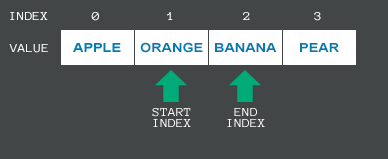
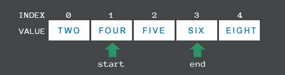
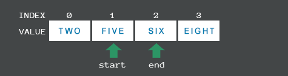
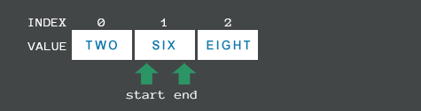
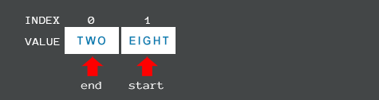

Using Enumerable Range
Namespace: Unify.Collections
Assembly: Unify.Collections.dll
The Enumerable Range feature allows Unify Enumerators to iterate over a whole collection or just part of a collection, repeat the iteration and step over items at a specified interval.
Specifying a Range
An enumerable range is defined by a start item and an end item; these values are initialised through the startItemIndex and endItemIndex properties. It is the objects at these positions that Unify uses to maintain the enumerable range, not the index values themselves.

The above image shows a list containing 4 strings with the values; "two", "four", "six" and "eight"; the startItemIndex is set to index position 1 which holds the value "four"; the endItemIndex is set to index position 2 which holds the value "six".
The UnifyEnumerableRange has been designed to be dynamic; as the underlying collection changes through items being added, inserted or removed, Unify will adjust the startItemIndex and endItemIndex to always point to values between, and including, "four" and "six".
If the value "five" is inserted into the underlying list at index position 2, list.Insert(2, "five");, Unify will adjust the enumerable range so the endItemIndex is still pointing to the value "six":

If we remove the item "four" from the underlying list at index position 1, list.RemoveAt(1);, the enumerable range will now look like this:

If we now remove the item "five" from the underlying list at index position 1, list.RemoveAt(1);, the enumerable range will adjust again:

At this stage the enumerable range only contains the item "six" at index position 1, so startItemIndex and endItemIndex are now pointing to the same item.
If this one remaining item is removed the enumerable range becomes empty and cannot be used further.

To specify an enumerable range that always starts from the beginning of a collection, or always ends at the last item of a collection, rather than track objects Unify provides the special value of -1 for this purpose.